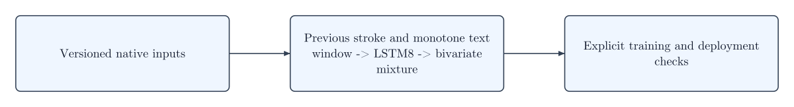
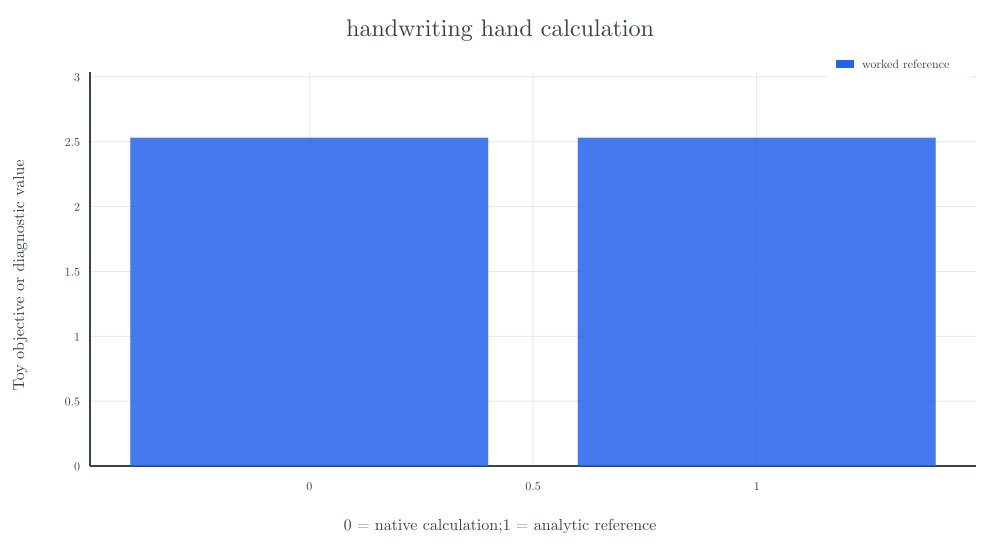
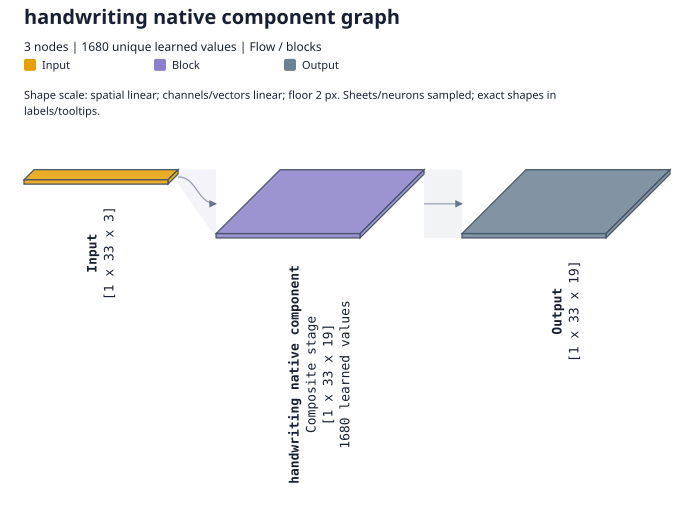
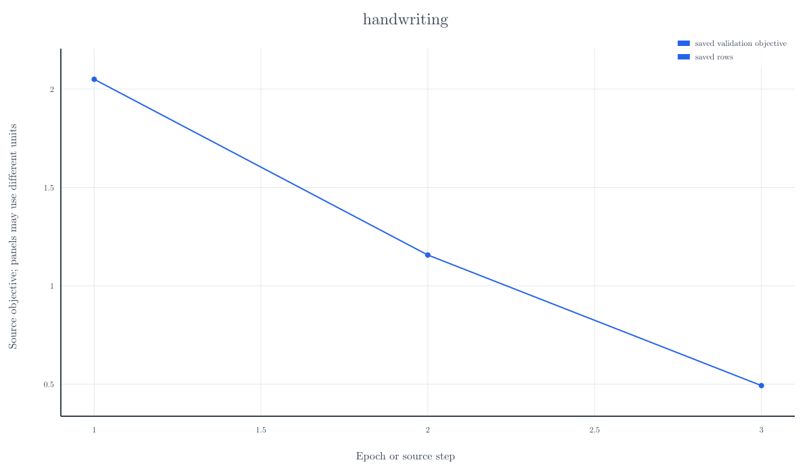
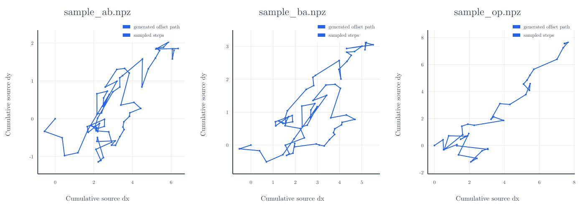

Handwriting
Abstract
Previous stroke and monotone text window -> LSTM8 -> bivariate mixture. The complete native C++ experiment preserves model equations, source seeds, update budgets and explicit fitting/generation loops. Missing data recipes are reconstructed and labelled; original TensorFlow recordings are checked only when genuinely present.
Provenance and scope
The original preparation recipes and most external recordings are absent from the recovered checkout. This report uses datamunge-nn-reconstruction-v1, whose native manifest records the exact public sources, row choices, tokenization and limitations. Reconstructed data validation and native checkpoint restoration do not establish parity with the missing original run. Published Small BERT is the real Google checkpoint, authenticated independently.
Follow the computation
Previous stroke and monotone text window -> LSTM8 -> bivariate mixture.
#include <dm/dm.hpp>
int main(){std::filesystem::create_directories("build");dm::graphics::Diagram d(29,1200);dm::graphics::DiagramNodeStyle s;s.width=14;s.height=5;s.font_size=23;d.node("data",{-18,0},"Versioned native inputs",s).node("model",{0,0},"Previous stroke and monotone text window -> LSTM8 -> bivariate mixture",s).node("audit",{18,0},"Explicit training and deployment checks",s).edge("data","model").edge("model","audit").save_svg("build/handwriting_method.svg");}
A calculation before fitting
At the origin, a unit independent bivariate normal has density1/(2*pi). Multiplying by a fair Bernoulli pen event gives1/(4*pi), so this simple offset/pen negative log likelihood is log(4*pi). The fitted model uses a conditional three-component mixture.
#include <dm/dm.hpp>
int main(){namespace n=dm::nn;double computed=-n::log(n::scalar(1./(4*std::numbers::pi),n::DType::Float64)).item(),analytic=std::log(4*std::numbers::pi);if(std::abs(computed-analytic)>2e-6)throw std::runtime_error("hand calculation differs from native primitives");std::print("| native calculation | analytic reference |\n|---:|---:|\n| {:.9f} | {:.9f} |\n",computed,analytic);dm::graphics::RPlot::create().bars(std::vector<double>{0,1},std::vector<double>{computed,analytic},"worked reference",{37,99,235}).ylim(0,std::max(.5,std::max(computed,analytic)*1.2)).x_label("0 = native calculation;1 = analytic reference").y_label("Toy objective or diagnostic value").title("handwriting hand calculation").size(1000,550).save_svg("build/handwriting_worked.svg");}| native calculation | analytic reference |
|---|---|
| 2.531024247 | 2.531024247 |

Prepare reproducible inputs
Native acquisition authenticates source bytes. Preparation calls no Python, upstream checkout or external training service. Every substituted task is described in its manifest; training-derived checkpoints are produced by editable programs below.
#include <dm/dm.hpp>
int main(){auto root=dm::datasets::prepare_example_data("nn-completion-assets");std::print("Versioned recipe root: {}\n",root);}Versioned recipe root: /home/jordan/.cache/datamunge/datasets/nn-completion-assets
Inspect the native graph
The preview traces the actual canonical component with independent parameters; it does not alter training. Composite grouping keeps full unrolls readable.
#include <dm/dm.hpp>
int main(){namespace n=dm::nn;namespace m=n::models;n::ParameterStore p(7);n::Module model([&](const n::Tensor&trace_input){auto y=m::handwriting::Handwriting(p,trace_input,n::zeros({1,3,21}));return n::model_stage("handwriting native component",trace_input,y.raw);},"handwriting native component graph");n::ModelPlotOptions options;options.detail=n::ModelPlotDetail::Blocks;options.sizing.minimum_extent=2;options.sizing.max_planes=2;model.plot(n::zeros({1,33,3}),options).save_svg("build/handwriting_network.svg");}
Complete editable experiment
Historical comments in the preserved source describe the original experiment; the versioned reconstruction manifest above describes the active inputs. Objectives, optimizer ownership, update schedules, sampling and search remain here. Source finite-difference, padding, causal/label-independence, checkpoint and immutability controls remain active. Weak held-out outcomes are retained.
#include <dm/dm.hpp>
namespace recovered_checkpoints {
inline std::filesystem::path Model(const std::string&name){auto p=std::filesystem::path(dm::datasets::data_home())/"nn-completion-checkpoints/models"/name;std::filesystem::create_directories(p);return p;}
}
// CMD: just run-nn handwriting
// Text-conditioned stroke synthesis with Graves monotonic windows and mixture density.
//
// Port of tflow's handwriting. Data: tflow's output/datasets/handwriting
// (data.npz: short real pen trajectories of 3-symbol prompts resampled to 33
// offset steps (dx, dy, pen-up), input = previous offset, target = next one;
// 140 fit / 40 validation / 40 test; ATTRIBUTION.txt).
// An 8-unit LSTM reads the previous offset and the previous soft window over
// the prompt; two Gaussian window components with monotonic centres pick the
// characters, and a 3-component bivariate Gaussian mixture plus a Bernoulli
// pen give the next-offset likelihood (1680 parameters). Adam .005, batch 8,
// three epochs (54 updates) on the mean per-step NLL.
// Checks: a mixture-density fixture (loss and its raw/target derivatives,
// compared with TF's density_fixture.npz when present); when tflow's recorded
// run is present, a replay from TF's initial weights (initial outputs with the
// stroke/text partials, first-batch gradients, history, final weights, and the
// seeded sample from the replayed weights); then the own-initialisation run
// audits restore, the streaming one-step cell against the teacher-forced unroll
// (all 33 steps), seeded repeat sampling and immutability. The path figure
// (paths.png) is not reproduced; samples are saved as .npz like TF's.
// Options: epochs=3 data=PATH tf=PATH.
// Output: output/nn/models/handwriting/.
// Editable workflow support: checks.hpp
// Small runtime checks used by the executable nn examples. They stay on in
// Release builds and make the example exit nonzero on failure, so `just
// run-all-nn` doubles as a regression test against the recorded TF numbers.
// Editable workflow support: runtime.hpp
// Bounded demonstrations by default; opt into convergence experiments explicitly.
namespace example_runtime {
inline bool Full() {
const char* value = std::getenv("DATAMUNGE_EXAMPLES_FULL");
return value && std::string(value) == "1";
}
template <typename T> T Limit(T requested, T quick_limit) {
return Full() ? requested : std::min(requested, quick_limit);
}
inline void Describe() {
if (!Full())
std::cout << "Quick demonstration: bounded training; convergence metrics require "
"DATAMUNGE_EXAMPLES_FULL=1.\n";
}
} // namespace example_runtime
namespace check {
inline void Require(bool condition, const std::string& message) {
if (!condition) throw std::runtime_error(message);
}
// A short demonstration checks execution, derivatives and persistence; reaching
// a published accuracy/return requires the separately requested full schedule.
inline void TrainingQuality(bool condition, const std::string& message) {
if (example_runtime::Full()) Require(condition, message);
else std::cout << " full-training quality check deferred: " << message << '\n';
}
inline void Near(double actual, double expected, double tolerance, const std::string& message) {
if (!std::isfinite(actual) || !std::isfinite(expected) || std::abs(actual - expected) > tolerance)
throw std::runtime_error(message + ": got " + std::to_string(actual) + ", expected " + std::to_string(expected));
}
/// Expects `f` to throw; returns the message.
template <typename F>
std::string Throws(F&& f, const std::string& message) {
try {
f();
} catch (const std::exception& e) {
return e.what();
}
throw std::runtime_error(message + ": expected an exception");
}
} // namespace check
inline void Header(const std::string& title) {
const std::size_t pad = title.size() < 60 ? 60 - title.size() : 0;
std::cout << "\n== " << title << " " << std::string(pad, '=') << "\n";
}
// Editable workflow support: handwriting.hpp
namespace handwriting {using namespace dm::nn::models::handwriting;
inline Tensor HandwritingNll(const Tensor& raw, const Tensor& target) {
const Tensor r = nn::reshape(raw, {-1, kRaw}), y = nn::reshape(target, {-1, 3});
auto part = [&](std::int64_t begin, std::int64_t n = 3) { return nn::slice_axis(r, 1, begin, begin + n); };
const Tensor lp = nn::log_softmax(part(0), -1);
const Tensor sx = nn::add(nn::exp(part(9)), .001), sy = nn::add(nn::exp(part(12)), .001), rho = nn::mul(nn::tanh(part(15)), .95);
const Tensor dx = nn::div(nn::sub(nn::slice_axis(y, 1, 0, 1), part(3)), sx);
const Tensor dy = nn::div(nn::sub(nn::slice_axis(y, 1, 1, 2), part(6)), sy);
const Tensor one = nn::sub(1.0, nn::square(rho));
const Tensor z = nn::sub(nn::add(nn::square(dx), nn::square(dy)), nn::mul(nn::mul(rho, nn::mul(dx, dy)), 2.0));
const Tensor normalizer = nn::add(nn::add(nn::log(sx), nn::log(sy)), nn::add(nn::mul(nn::log(one), .5), 1.8378770664));
const Tensor scores = nn::sub(nn::sub(lp, normalizer), nn::div(z, nn::mul(one, 2.0)));
const Tensor maximum = nn::stop_gradient(nn::max(scores, {1}, true));
const Tensor logdensity = nn::add(maximum, nn::log(nn::sum(nn::exp(nn::sub(scores, maximum)), {1}, true)));
const Tensor pen = part(18, 1);
const Tensor bce = nn::sub(nn::softplus(pen), nn::mul(nn::slice_axis(y, 1, 2, 3), pen));
return nn::mean(nn::sub(bce, logdensity));
}
}
// Editable workflow support: paths.hpp
// Where the nn example ports read datasets and write their outputs.
//
// Datasets: $DATAMUNGE_DATA_DIR, or the user's cache. Public datasets are
// prepared by the example data loaders when first needed.
// Outputs (checkpoints, histories, fixtures): $DATAMUNGE_OUTPUT_DIR, or
// output/nn relative to the working directory (`just run-nn` runs from the
// repository root). Both are created on demand by the caller.
// Editable workflow support: dataset_assets.hpp
namespace dataset_assets{inline std::string DataRoot(){return dm::datasets::data_home();}}
namespace dataset_assets {inline void EnsureSaliency(const std::string& directory){dm::datasets::prepare_example_data("mnist-assets",std::filesystem::path(directory).parent_path().string());}}
namespace dataset_assets {
inline dm::nn::ImageDataset LoadCifar10(const std::string&directory,const std::string&split){dm::datasets::fetch("cifar10",std::filesystem::path(directory).parent_path().string());return dm::nn::load_cifar10(directory,split);}
}
namespace paths {
inline std::filesystem::path DataRoot() {
return dataset_assets::DataRoot();
}
/// DataRoot() / name, e.g. Dataset("mnist").
inline std::filesystem::path Dataset(const std::string& name) { if(name=="cifar10"||name=="character_rnn")return DataRoot()/name;return std::filesystem::path(dm::datasets::prepare_example_data("nn-completion-assets"))/name; }
inline std::filesystem::path OutputRoot(){return std::filesystem::absolute("build/nn-completion");}
/// OutputRoot() / relative, created as a directory.
inline std::filesystem::path OutputDir(const std::string& relative) {
auto dir = OutputRoot() / relative;
std::filesystem::create_directories(dir);
return dir;
}
} // namespace paths
// Editable workflow support: tf_replay.hpp
// Small helpers the 4.2 sequence-task ports share for working with tflow's
// recorded runs: named-array maps (tflow's `std::map<std::string, tf::Tensor>`
// batches), row selection, exact/approximate comparisons, loading TF's
// initial_arrays.npz into a ParameterStore and reading history.tsv columns.
//
// A tflow run directory (tflow's output/models/<name>) holds initial_arrays.npz,
// first_batch.npz, initial_gradients.npz, history.tsv and model_arrays.npz.
// Replaying the run from TF's own initial weights with the same batch order
// (nn::BatchOrder reproduces tflow's) and the same optimizer checks the port
// numerically, independently of the random initialisation.
namespace replay {
namespace nn = datamunge::nn;
using nn::Tensor;
using Map = std::map<std::string, Tensor>;
/// tflow's recorded output directory for an example (its output/models/<name>).
inline std::filesystem::path TfModels(const std::string& name) {
return paths::DataRoot().parent_path() / "models" / name;
}
inline Tensor Get(const nn::NamedTensors& arrays, const std::string& key) {
for (const auto& [name, t] : arrays)
if (name == key) return t;
throw std::runtime_error("missing array " + key);
}
inline Map ToMap(const nn::NamedTensors& arrays) { return {arrays.begin(), arrays.end()}; }
inline nn::NamedTensors ToNamed(const Map& m) { return {m.begin(), m.end()}; }
/// Rows `rows` (axis 0) of every array.
inline Map Rows(const Map& m, const std::vector<std::int64_t>& rows) {
Map out;
for (const auto& [k, v] : m) out[k] = nn::take_rows(v, rows);
return out;
}
/// {key: arrays["<split>_<key>"]} for each key.
inline Map Split(const nn::NamedTensors& arrays, const std::string& split, const std::vector<std::string>& keys) {
Map out;
for (const auto& k : keys) out[k] = Get(arrays, split + "_" + k);
return out;
}
inline double MaxAbsDiff(const Tensor& a, const Tensor& b) {
const auto x = a.to_vector<double>(), y = b.to_vector<double>();
check::Require(x.size() == y.size(), "compared tensors have the same size");
double m = 0;
for (std::size_t i = 0; i < x.size(); ++i) m = std::max(m, std::abs(x[i] - y[i]));
return m;
}
/// Bit-identical values (dtype and shape included).
inline bool SameBits(const Tensor& a, const Tensor& b) {
if (a.dtype() != b.dtype() || a.shape() != b.shape()) return false;
auto same = [](const auto& x, const auto& y) {
return x.size() == y.size() && (x.empty() || std::memcmp(x.data(), y.data(), x.size() * sizeof(x[0])) == 0);
};
switch (a.dtype()) {
case nn::DType::Float32: return same(a.to_vector<float>(), b.to_vector<float>());
case nn::DType::Float64: return same(a.to_vector<double>(), b.to_vector<double>());
case nn::DType::Int32: return same(a.to_vector<std::int32_t>(), b.to_vector<std::int32_t>());
default: return same(a.to_vector<std::int64_t>(), b.to_vector<std::int64_t>());
}
}
inline bool SameBits(const Map& a, const Map& b) {
if (a.size() != b.size()) return false;
for (const auto& [k, v] : a)
if (!b.count(k) || !SameBits(v, b.at(k))) return false;
return true;
}
/// Copies of every parameter, by name.
inline Map Arrays(const nn::ParameterStore& p) {
Map out;
for (const auto& name : p.names()) out[name] = p.at(name).detach().clone();
return out;
}
/// Gradients aligned with p.names(), by name.
inline Map Named(const nn::ParameterStore& p, const std::vector<Tensor>& g) {
Map out;
for (std::size_t i = 0; i < g.size(); ++i) out[p.names()[i]] = g[i].defined() ? g[i].detach() : nn::zeros_like(p.parameters()[i]).detach();
return out;
}
/// Overwrites every parameter of `p` from an .npz (e.g. TF's initial_arrays.npz),
/// which must hold exactly p's names.
inline void LoadInto(nn::ParameterStore& p, const std::filesystem::path& file) {
const auto arrays = nn::load_npz(file.string());
check::Require(arrays.size() == p.size(), "array file covers exactly the model's parameters: " + file.string());
for (const auto& [name, value] : arrays) {
check::Require(p.contains(name), "array " + name + " is a model parameter");
p.set(name, nn::cast(value, p.at(name).dtype()));
}
}
/// max |a[k] - b[k]| over the keys of `a` (all must exist in `b`).
inline double MaxDiff(const Map& a, const Map& b) {
double m = 0;
for (const auto& [k, v] : a) {
check::Require(b.count(k) > 0, "reference has array " + k);
m = std::max(m, MaxAbsDiff(v, b.at(k)));
}
return m;
}
inline double MaxDiff(const Map& a, const std::filesystem::path& file) { return MaxDiff(a, ToMap(nn::load_npz(file.string()))); }
/// Column `column` (0-based) of a tab-separated history file with a header line.
inline std::vector<double> History(const std::filesystem::path& file, int column = 1) {
std::ifstream in(file);
std::string line;
std::vector<double> out;
std::getline(in, line);
while (std::getline(in, line)) {
std::stringstream ss(line);
std::string cell;
for (int c = 0; c <= column && std::getline(ss, cell, '\t'); ++c)
if (c == column) out.push_back(std::stod(cell));
}
return out;
}
inline nn::OptimizerConfig Adam() {
nn::OptimizerConfig c;
c.kind = nn::OptimizerKind::Adam;
return c;
}
/// Copies `files` from `from` to `to` when present.
inline void CopyAssets(const std::filesystem::path& from, const std::filesystem::path& to,
const std::vector<std::string>& files) {
for (const auto& f : files)
if (std::filesystem::exists(from / f))
std::filesystem::copy_file(from / f, to / f, std::filesystem::copy_options::overwrite_existing);
}
} // namespace replay
namespace nn = datamunge::nn;
using nn::Tensor;
using replay::Map;
using namespace handwriting;
namespace {
struct Model {
nn::ParameterStore p;
explicit Model(std::uint64_t seed) : p(seed) {
nn::NoGradGuard guard;
Handwriting(p, nn::zeros({1, kSteps, 3}), Text(nn::zeros({1, 3}, nn::DType::Int32)));
check::Require(p.count() == 1680 && p.size() == 7, "1680 parameters seven tensors");
}
static Tensor Text(const Tensor& labels) { return nn::one_hot(labels, kSymbols); }
Map Evaluate(const Map& b) {
Tensor x = b.at("input").detach().clone(), text = Text(b.at("labels"));
x.requires_grad_(true);
text.requires_grad_(true);
const Path path = Handwriting(p, x, text);
const Tensor loss = HandwritingNll(path.raw, b.at("target"));
const auto g = nn::grad(loss, {x, text});
return {{"raw", path.raw.detach()}, {"loss", loss.detach()}, {"h", path.h.detach()},
{"c", path.c.detach()}, {"kappa", path.kappa.detach()}, {"window", path.window.detach()},
{"phi", path.phi.detach()}, {"input_gradient", g[0]}, {"text_gradient", g[1]}};
}
std::vector<Tensor> Gradients(const Map& b) {
return nn::grad(HandwritingNll(Handwriting(p, b.at("input"), Text(b.at("labels"))).raw, b.at("target")), p.parameters());
}
/// One streaming step from owned state: {raw, h, c, kappa, window, phi}.
std::vector<Tensor> StepOnce(const Tensor& stroke, const Tensor& labels, const Tensor& h, const Tensor& c,
const Tensor& k, const Tensor& w) {
nn::NoGradGuard guard;
const auto s = HandwritingCell(p, stroke, Text(labels), {h, c}, k, w);
return {s.raw, s.state.h, s.state.c, s.kappa, s.window, s.phi};
}
/// Samples up to 66 offsets for the prompt (first, second, end) with tflow's
/// mt19937 uniforms: component by inverse CDF, Box-Muller Gaussians, Bernoulli pen.
Map Sample(int first, int second, std::uint32_t seed) {
Tensor stroke = nn::zeros({1, 3}), h = nn::zeros({1, 8}), c = nn::zeros({1, 8}), k = nn::zeros({1, 2}),
w = nn::zeros({1, kSymbols});
const Tensor label = nn::from_vector(std::vector<std::int32_t>{first, second, 20}, {1, 3});
const std::vector<std::pair<std::string, int>> fields{{"raw", 19}, {"h", 8}, {"c", 8}, {"kappa", 2}, {"window", 21}, {"phi", 3}};
std::map<std::string, std::vector<float>> a;
for (const auto& [name, width] : fields) a[name].assign(66 * width, 0.f);
a["strokes"].assign(66 * 3, 0.f);
std::vector<double> uniform(66 * 4, 0.0);
std::mt19937 rng(seed);
int used = 0;
for (int t = 0; t < 66; ++t) {
const auto out = StepOnce(stroke, label, h, c, k, w);
h = out[1], c = out[2], k = out[3], w = out[4];
for (std::size_t f = 0; f < fields.size(); ++f) {
const auto v = out[f].to_vector<float>();
std::copy(v.begin(), v.end(), a[fields[f].first].begin() + t * fields[f].second);
}
double u[4];
for (int j = 0; j < 4; ++j) uniform[t * 4 + j] = u[j] = (double(rng()) + .5) / 4294967296.;
const auto r = out[0].to_vector<float>();
double maximum = std::max({r[0], r[1], r[2]}), mass = 0, cumulative = 0;
for (int j = 0; j < 3; ++j) mass += std::exp(r[j] - maximum);
int component = 2;
for (int j = 0; j < 3; ++j) {
cumulative += std::exp(r[j] - maximum) / mass;
if (u[0] < cumulative) {
component = j;
break;
}
}
const double radius = std::sqrt(-2 * std::log(u[1])), z1 = radius * std::cos(6.283185307179586 * u[2]),
z2 = radius * std::sin(6.283185307179586 * u[2]);
const double sx = std::exp(r[9 + component]) + .001, sy = std::exp(r[12 + component]) + .001,
rho = .95 * std::tanh(r[15 + component]);
const float s0 = static_cast<float>(r[3 + component] + sx * z1);
const float s1 = static_cast<float>(r[6 + component] + sy * (rho * z1 + std::sqrt(1 - rho * rho) * z2));
const float s2 = u[3] < 1 / (1 + std::exp(-double(r[18])));
stroke = nn::from_vector(std::vector<float>{s0, s1, s2}, {1, 3});
const float sampled[3] = {s0, s1, s2};
for (int j = 0; j < 3; ++j) {
a["strokes"][t * 3 + j] = sampled[j];
check::Require(std::isfinite(sampled[j]), "finite sampled handwriting");
}
used = t + 1;
const auto phi = out[5].to_vector<float>();
if (s2 == 1 && phi[2] > phi[0] && phi[2] > phi[1]) break;
}
Map result;
for (const auto& [name, width] : fields) result[name] = nn::from_vector(a[name], {66, width});
result["strokes"] = nn::from_vector(a["strokes"], {66, 3});
result["uniform"] = nn::from_vector(uniform, {66, 4});
result["prompt"] = label;
result["length"] = nn::from_vector(std::vector<std::int32_t>{used}, {});
return result;
}
};
std::vector<double> Train(Model& m, const Map& fit, const Map& validation, int epochs, std::ofstream* batches,
const std::filesystem::path* root) {
nn::Optimizer opt(m.p, .005, replay::Adam());
nn::BatchOrder order(140, 8, 45007);
std::vector<double> history;
int updates = 0;
for (int e = 1; e <= epochs; ++e) {
order.begin_epoch();
for (;;) {
const auto rows = order.next();
if (rows.empty()) break;
const auto b = replay::Rows(fit, rows);
if (!updates && root) {
nn::save_npz((*root / "first_batch.npz").string(), replay::ToNamed(b));
nn::save_npz((*root / "initial_gradients.npz").string(), replay::ToNamed(replay::Named(m.p, m.Gradients(b))));
}
opt.step(m.Gradients(b));
if (!updates && root) m.p.save((*root / "first_after.npz").string());
if (batches)
for (auto r : rows) *batches << e << '\t' << updates << '\t' << r << '\n';
++updates;
}
nn::NoGradGuard guard;
const double nll = HandwritingNll(Handwriting(m.p, validation.at("input"), Model::Text(validation.at("labels"))).raw,
validation.at("target")).item<double>();
check::Require(std::isfinite(nll), "finite NLL");
history.push_back(nll);
}
return history;
}
void DensityFixture(const std::filesystem::path& root, const std::filesystem::path& tf) {
std::vector<float> rv(4 * 19);
for (std::size_t i = 0; i < rv.size(); ++i) rv[i] = static_cast<float>(.7 * std::sin(i * .43));
Tensor raw = nn::from_vector(rv, {4, 19});
Tensor target = nn::from_vector(std::vector<float>{.2f, -.8f, 0.f, 1.f, .3f, 1.f, -.5f, .7f, 0.f, 2.f, -1.f, 1.f}, {4, 3});
raw.requires_grad_(true);
target.requires_grad_(true);
const Tensor loss = HandwritingNll(raw, target);
const auto g = nn::grad(loss, {raw, target});
// Reference: direct double-precision mixture density of each row.
double nll = 0;
for (int n = 0; n < 4; ++n) {
const float* r = rv.data() + n * 19;
const double y0 = target.to_vector<float>()[n * 3], y1 = target.to_vector<float>()[n * 3 + 1], pen = target.to_vector<float>()[n * 3 + 2];
double zsum = 0, m = std::max({r[0], r[1], r[2]});
for (int j = 0; j < 3; ++j) zsum += std::exp(r[j] - m);
double density = 0;
for (int j = 0; j < 3; ++j) {
const double pi = std::exp(r[j] - m) / zsum, sx = std::exp(r[9 + j]) + .001, sy = std::exp(r[12 + j]) + .001,
rho = .95 * std::tanh(r[15 + j]), dx = (y0 - r[3 + j]) / sx, dy = (y1 - r[6 + j]) / sy;
const double z = dx * dx + dy * dy - 2 * rho * dx * dy;
density += pi * std::exp(-z / (2 * (1 - rho * rho))) / (2 * M_PI * sx * sy * std::sqrt(1 - rho * rho));
}
nll += (std::log1p(std::exp(r[18])) - pen * r[18]) - std::log(density);
}
check::Near(loss.item<double>(), nll / 4, 1e-5, "mixture NLL matches a direct bivariate-Gaussian evaluation");
nn::save_npz((root / "density_fixture.npz").string(), {{"raw", raw.detach()}, {"target", target.detach()}, {"loss", loss.detach()},
{"raw_gradient", g[0]}, {"target_gradient", g[1]}});
std::cout << " MDN fixture: loss matches direct density";
if (std::filesystem::exists(tf / "density_fixture.npz")) {
const auto ref = nn::load_npz((tf / "density_fixture.npz").string());
const double d = std::max({replay::MaxAbsDiff(loss, replay::Get(ref, "loss")), replay::MaxAbsDiff(g[0], replay::Get(ref, "raw_gradient")),
replay::MaxAbsDiff(g[1], replay::Get(ref, "target_gradient"))});
check::Near(d, 0, 2e-6, "MDN fixture loss/raw/target derivatives match TF");
std::cout << "; vs TF loss/derivatives max diff=" << d;
}
std::cout << "\n";
}
void TfParity(const std::filesystem::path& tf, const Map& fit, const Map& validation, const Map& test, int epochs) {
if (!std::filesystem::exists(tf / "initial_arrays.npz")) {
std::cout << " (tflow run not found at " << tf << "; TF parity skipped)\n";
return;
}
Model m(0);
replay::LoadInto(m.p, tf / "initial_arrays.npz");
const double out = replay::MaxDiff(m.Evaluate(test), tf / "initial_outputs.npz");
const auto fb = replay::ToMap(nn::load_npz((tf / "first_batch.npz").string()));
const double gd = replay::MaxDiff(replay::Named(m.p, m.Gradients(fb)), tf / "initial_gradients.npz");
check::Near(out, 0, 2e-5, "initial outputs and stroke/text partials match TF");
check::Near(gd, 0, 2e-5, "first-batch parameter gradients match TF");
const auto hist = Train(m, fit, validation, epochs, nullptr, nullptr);
const auto tfh = replay::History(tf / "history.tsv");
double worst = 0;
for (std::size_t e = 0; e < hist.size() && e < tfh.size(); ++e) {
std::cout << " replay epoch=" << e + 1 << " validationNLL=" << hist[e] << " (TF " << tfh[e] << ")\n";
worst = std::max(worst, std::abs(hist[e] - tfh[e]));
}
std::cout << " TF parity from TF's initial weights: initial outputs max diff=" << out << ", first-batch gradients max diff=" << gd;
if (epochs == 3) {
const double w = replay::MaxDiff(replay::Arrays(m.p), tf / "model_arrays.npz");
std::cout << ", final weights max diff=" << w;
check::Near(worst, 0, 1e-3, "validation NLL history tracks TF's recorded run");
check::Near(w, 0, 1e-3, "final weights track TF's after 54 Adam updates");
if (std::filesystem::exists(tf / "sample_ab.npz")) {
const auto ours = m.Sample(0, 1, 45011);
const auto ref = replay::ToMap(nn::load_npz((tf / "sample_ab.npz").string()));
const int n = ours.at("length").item<int>(), tn = ref.at("length").item<int>();
std::cout << "; seeded sample 'ab' from the replayed weights: length " << n << " (TF " << tn
<< "), strokes max diff=" << replay::MaxAbsDiff(ours.at("strokes"), ref.at("strokes"));
}
}
std::cout << "\n";
}
} // namespace
int main(int argc, char** argv) {
try {
const auto start = std::chrono::steady_clock::now();
int epochs = 3;
std::filesystem::path data = paths::Dataset("handwriting"), tf = replay::TfModels("handwriting");
for (int i = 1; i < argc; ++i) {
const std::string a = argv[i];
if (a.rfind("epochs=", 0) == 0) epochs = std::stoi(a.substr(7));
else if (a.rfind("data=", 0) == 0) data = a.substr(5);
else if (a.rfind("tf=", 0) == 0) tf = a.substr(3);
else throw std::invalid_argument("epochs=N data=PATH tf=PATH");
}
check::Require(epochs > 0 && epochs <= 100, "positive epochs");
const auto root = paths::OutputDir("models/handwriting");
replay::CopyAssets(data, root, {"data.npz", "manifest.json", "ATTRIBUTION.txt"});
DensityFixture(root, tf);
const auto all = nn::load_npz((data / "data.npz").string());
const std::vector<std::string> keys{"input", "target", "labels", "source_ids"};
const Map fit = replay::Split(all, "fit", keys), validation = replay::Split(all, "validation", keys),
test = replay::Split(all, "test", keys);
TfParity(tf, fit, validation, test, epochs);
Model m(45003);
m.p.save((root / "initial_arrays.npz").string());
nn::save_npz((root / "initial_outputs.npz").string(), replay::ToNamed(m.Evaluate(test)));
std::ofstream history(root / "history.tsv"), batches(root / "batches.tsv");
history << "epoch\tvalidation_nll\n";
batches << "epoch\tstep\trow\n";
const auto hist = Train(m, fit, validation, epochs, &batches, &root);
for (std::size_t e = 0; e < hist.size(); ++e) {
history << e + 1 << '\t' << hist[e] << '\n';
std::cout << "epoch=" << e + 1 << " validationNLL=" << hist[e] << std::endl;
}
const Map first = replay::ToMap(nn::load_npz((root / "first_batch.npz").string()));
nn::save_npz((root / "final_gradients.npz").string(), replay::ToNamed(replay::Named(m.p, m.Gradients(first))));
m.p.save((root / "final.npz").string());
Model deployed(0);
deployed.p.load((root / "final.npz").string());
const Map weights = replay::Arrays(deployed.p);
check::Require(replay::SameBits(replay::Arrays(m.p), weights), "restore bitexact");
const Map out = deployed.Evaluate(test);
// The streaming cell from teacher-forced states reproduces every unrolled step.
const char* names[6] = {"raw", "h", "c", "kappa", "window", "phi"};
double stream = 0;
for (int t = 0; t < kSteps; ++t) {
auto at = [&](const std::string& name, int step) { return nn::select(out.at(name), 1, step); };
const auto step = deployed.StepOnce(nn::select(test.at("input"), 1, t), test.at("labels"), at("h", t), at("c", t),
at("kappa", t), at("window", t));
for (int f = 0; f < 6; ++f) {
const int next = (f >= 1 && f <= 4) ? 1 : 0;
stream = std::max(stream, replay::MaxAbsDiff(step[f], at(names[f], t + next)));
}
}
check::Near(stream, 0, 2e-5, "native shared teacher/streaming path");
const auto sample = deployed.Sample(0, 1, 45011);
check::Require(replay::SameBits(sample.at("strokes"), deployed.Sample(0, 1, 45011).at("strokes")), "seeded repeat sample");
nn::save_npz((root / "sample_ab.npz").string(), replay::ToNamed(sample));
nn::save_npz((root / "sample_ba.npz").string(), replay::ToNamed(deployed.Sample(1, 0, 45011)));
nn::save_npz((root / "sample_op.npz").string(), replay::ToNamed(deployed.Sample(10, 11, 45013)));
nn::save_npz((root / "outputs.npz").string(), replay::ToNamed(out));
nn::save_npz((root / "model_arrays.npz").string(), replay::ToNamed(weights));
check::Require(replay::SameBits(replay::Arrays(deployed.p), weights), "immutable generation");
const double test_nll = out.at("loss").item<double>();
std::ofstream metrics(root / "metrics.json");
metrics << "{\"parameters\":1680,\"epochs\":" << epochs << ",\"updates\":" << epochs * 18 << ",\"test_nll\":" << test_nll << "}\n";
std::cout << "testNLL=" << test_nll << " (TF recorded 2.84756); streaming max diff=" << stream << ", sample 'ab' length "
<< sample.at("length").item<int>() << ";restore/sharedStreaming/seeded/immutable PASS\n";
std::cout << "wall " << std::chrono::duration<double>(std::chrono::steady_clock::now() - start).count() << " s\n";
return 0;
} catch (const std::exception& e) {
std::cerr << e.what() << '\n';
return 1;
}
}
MDN fixture: loss matches direct density (tflow run not found at "/home/jordan/.cache/datamunge/models/handwriting"; TF parity skipped) epoch=1 validationNLL=2.05013 epoch=2 validationNLL=1.15664 epoch=3 validationNLL=0.492694 testNLL=0.483128 (TF recorded 2.84756); streaming max diff=0, sample 'ab' length 66;restore/sharedStreaming/seeded/immutable PASS wall 0.191662 s
Inspect the actual saved results
The figures below read actual saved outputs from this run. Native graph previews appear above the complete program. Reconstructed-task results retain the source budgets and are not reported as original benchmark scores.
Actual validation history
Each panel reads the first recorded objective from a saved history.tsv. Different tasks and loss definitions have different units; compare curves within a panel. These are reconstructed-data outcomes with the original update budgets.
#include <dm/dm.hpp>
int main(){namespace fs=std::filesystem;std::vector<fs::path> files;for(const auto&entry:fs::recursive_directory_iterator("build/nn-completion/models/handwriting"))if(entry.path().filename()=="history.tsv")files.push_back(entry.path());std::sort(files.begin(),files.end());if(files.empty())throw std::runtime_error("actual validation histories missing");auto layout=dm::graphics::RLayout::create((files.size()+1)/2,std::min(size_t(2),files.size()));for(const auto&file:files){std::ifstream in(file);std::string header,line;std::getline(in,header);std::vector<double>x,y;while(std::getline(in,line)){std::istringstream row(line);double step,value;if(row>>step>>value){x.push_back(step);y.push_back(value);}}if(x.empty())continue;auto plot=dm::graphics::RPlot::create();plot.lines(x,y,"saved validation objective",{37,99,235}).points(x,y,"saved rows",{37,99,235},4).x_label("Epoch or source step").y_label("Source objective; panels may use different units").title(file.parent_path().filename().string());layout.add(plot);}layout.size(1200,std::max(size_t(700),400*((files.size()+1)/2))).fit_panels().save_svg("build/handwriting_history.svg");}
Actual generated pen-coordinate trajectories
Coordinates accumulate the saved generated offsets. Lines show temporal order, including moves across pen-up events. File names retain the historical source names; this reconstruction trains only digit IDs0..9 in the21-symbol model. An out-of-training prompt ID is a control, not evidence of learned letter synthesis.
#include <dm/dm.hpp>
int main(){auto load=[](const std::string&path){auto a=dm::nn::load_npz(path);return std::map<std::string,dm::nn::Tensor>(a.begin(),a.end());};auto layout=dm::graphics::RLayout::create(1,3);for(auto file:{"sample_ab.npz","sample_ba.npz","sample_op.npz"}){auto a=load("build/nn-completion/models/handwriting/"+std::string(file));auto stroke=a.at("strokes").to_vector<double>();std::vector<double>x{0},y{0};for(size_t t=0;t+2<stroke.size();t+=3){x.push_back(x.back()+stroke[t]);y.push_back(y.back()+stroke[t+1]);}auto plot=dm::graphics::RPlot::create();plot.lines(x,y,"generated offset path",{37,99,235}).points(x,y,"sampled steps",{37,99,235},2).x_label("Cumulative source dx").y_label("Cumulative source dy").title(file);layout.add(plot);}layout.size(1400,500).fit_panels().save_svg("build/handwriting_paths.svg");}